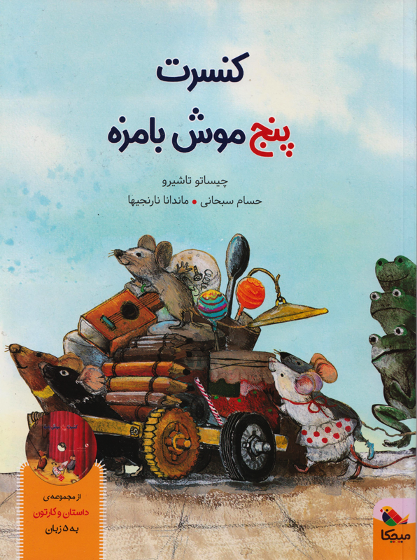

|
اژدهای کتابخوان دانکن عاشق کتاب خواندن بود. وقتی دانکن کتاب میخواند، غرق استان میشد و ماجراهای کتاب توی خیالش جان میگرفتند. وقتی به جاهای هیجانانگیز میرسید، یکدفعه از دهانش آتش بیرون میآمد و بدبختانه کتابش آتش میگرف و میسوخت. |
||
|  |
کنسرت پنج موش بامزه هر وقت پنج موش بامزه با هم جایی می روند، اتفاق جالبی در راه است. وقتی در یک شب مهتابی، یواشکی به کنسرت قورباغه ها گوش می کنند، دیگر نمی توانند آواز دلنشین و زیبای قورباغه ها را از سرشان بیرون کنند. پس تصمیم می گیرند که گروه موسیقی موش ها را تشکیل دهند: پنج موش بامزه… |
|
|
فقط یک قصهی دیگر! خرگوش کوچولو شامش را خورده بود، حمام کرده بود و حالا فقط یک کار مانده بود…خرگوش کوچولو فریاد زد: وقت کتاب خواندن است. مامانش برایش یک قصه خواند. بعد یکی دیگر. باز هم یکی دیگر! خرگوشکوچولو با التماس گفت: فقط یک قصه دیگر! |
||
|
داسی دایناسی 9/ سوراخهای برقدار سلام آقای مورچه!/ بازم میخوای کلوچه؟/ الان برات میریزم/ لونهات کجاست عزیزم؟ |